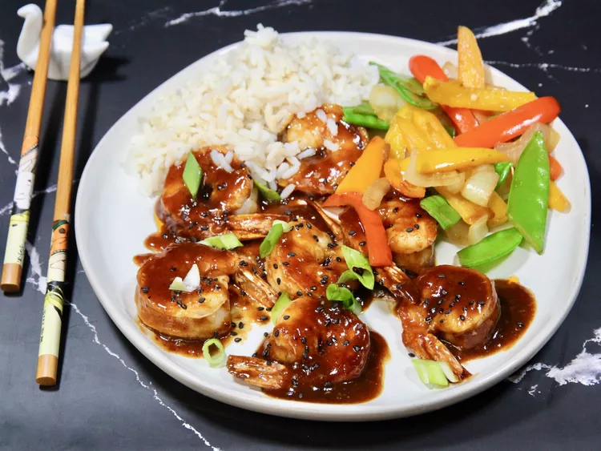

Gochujang Honey Shrimp

Description:
Wow your taste buds by adding some gochujang sauce to your next shrimp dinner. You'll feel a little heat, but there's also a pop of sweetness from the honey. The spiciness can be controlled by the amount of gochujang.
Ingredients:
- 16 ounces uncooked medium shrimp, peeled and deveined
- garlic powder to taste
- salt to taste
- 3 tablespoons gochujang (Korean hot and sweet pepper paste), or to taste
- 2 tablespoons honey
- 1 tablespoon sesame oil
- 3 teaspoons soy sauce
- 1 teaspoon freshly squeezed lemon juice
- 3 cloves garlic, minced
- 1 teaspoon minced fresh ginger root
- 1 ½ tablespoons vegetable oil, or more as needed
- ½ cup water
- 1 teaspoon cornstarch
- 1 teaspoon sesame seeds
- scallions, sliced diagonally, as a garnish
Steps:
- Season both sides of shrimp with garlic powder and salt, and set aside.
- Combine gochujang, honey, sesame oil, soy sauce, lemon juice, garlic, and ginger in a bowl until well combined. Set aside.
- Heat oil in a non-stick skillet over medium-high heat. Add shrimp and cook until they are bright pink on the outside and the meat is opaque, 2 to 3 minutes, flipping half way through; do not overcook. Remove shrimp from the pan.
- Reduce temperature to low, and add sauce to skillet. Whisk water and cornstarch together in a small bowl to make a slurry. Stir slurry into the sauce until well combined. Keep cooking, stirring constantly, until the sauce starts to slightly thicken, about 1 minute. Add shrimp back into the skillet and stir until coated and just heated through.
- Garnish with sesame seeds and scallions. Serve hot.
Chef's Notes:
There are many variations of gochujang with different levels of spiciness. I use the hot and sweet sauce version, and it's still spicy. Whatever gochujang that you use, be sure to taste it and adjust the amount to your taste preference. Feel free to substitute garlic and ginger pastes in the tube (such as Gourmet Garden™).
I use size 16-20 per pound shrimp, so if you use another size, adjust your cooking time accordingly.